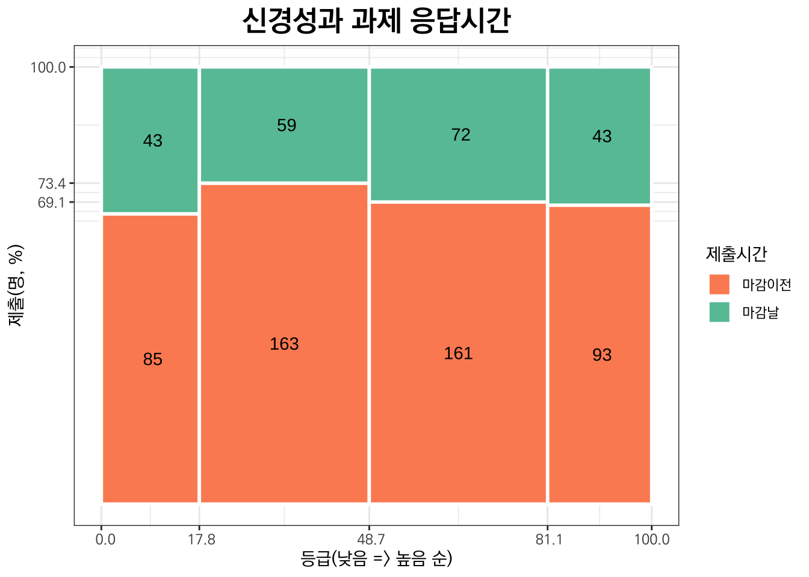
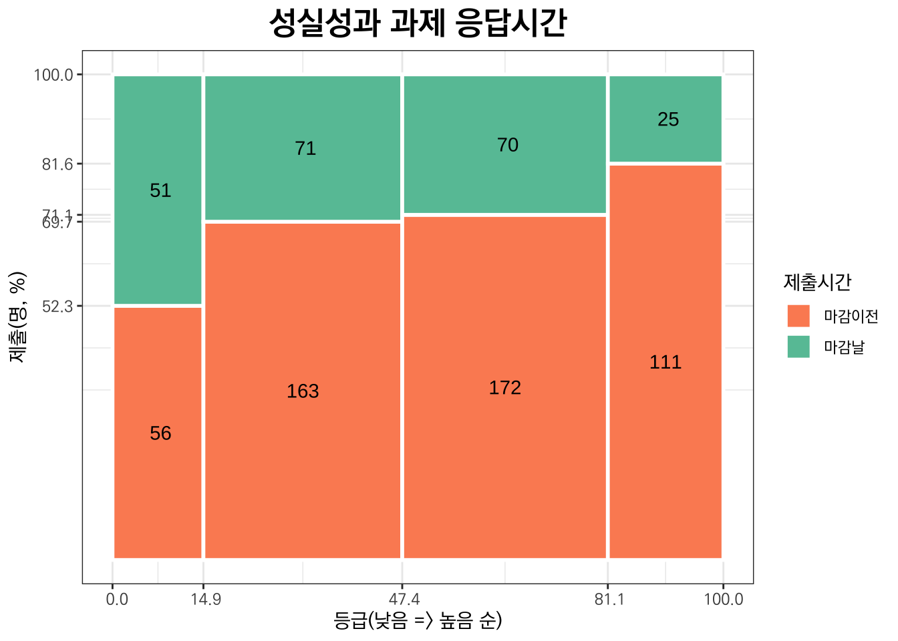
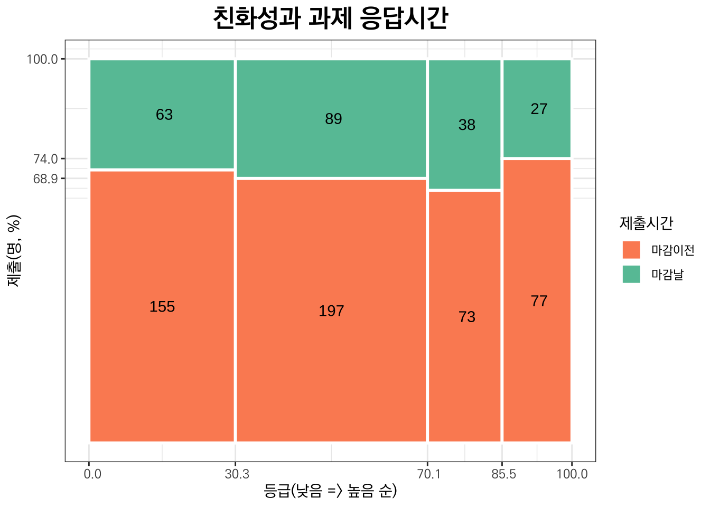
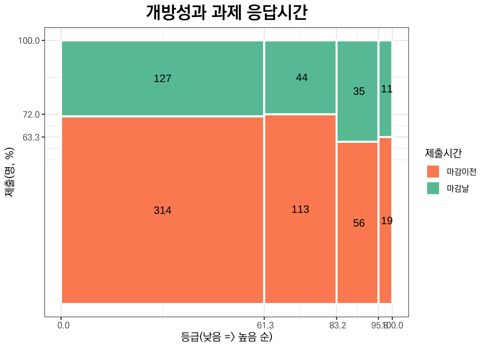

제 16 Big Five Personality and Multiple Intelligence
16.1 성격특성별 분포
이 수업에서 성격 5요인(Big Five Personality)을 파악하기 위하여 사용하고 있는 뉴캐슬 성격 평가(NPA, Newcastle Personality Assessor 12 Questions)는 영국 뉴캐슬 대학교의 대니얼 네틀(Daniel Nettle) 박사가 개발한 간단한 성격 평가 도구로, 12개의 문항을 통해 개인의 성격을 평가합니다. 대니얼 네틀의 저서 ’Personality’를 2009년에 <성격의 탄생>이라는 제목으로 번역판이 나왔는데 번역도 매끄럽고 읽기 좋은 편이었지만 책 31쪽의 성격진단표에서 “7~9번에 대한 응답점수”는 “7, 9번에 대한 응답점수”의 잘못된 번역이라는 것을 알게 되었습니다. 꽤 오랜 기간 올려 놓았던 자료들을 모두 수정해야 했습니다. 그 과정에 도움을 준 책은 2018년에 초판이 나온 최현석 프라임요양병원 원장의 저서 <인간의 모든 성격>이었습니다.
이 평가 도구는 성격의 다섯 가지 주요 요소인 개방성(Openness), 성실성(Conscientiousness), 외향성(Extraversion), 친화성(Agreeableness), 신경성(Neuroticism)을 측정합니다. 각 요소는 2~3개의 문항으로 구성되어 있으며, 응답자는 각 문항에 대해 5점 척도로 자신에게 얼마나 해당하는지를 평가합니다. NPA는 짧은 시간 내에 성격 특성을 평가할 수 있어 연구나 개인적인 자기 이해를 위한 도구로 활용됩니다. 다만, 문항 수가 적어 심층적인 분석보다는 전반적인 성격 경향을 파악하는 데 유용합니다.
외향성(Extraversion)은 사회적 상황에서의 활력과 적극성을 나타내며, 타인과의 상호작용을 즐기는 성향입니다. 외향성 점수가 높은 사람은 사교적이고 활동적이며, 긍정적 감정을 잘 표현합니다. 외향성 점수가 낮은 사람은 내성적이고, 혼자 있는 것을 선호하며, 에너지를 외부보다는 내부에서 얻는 경향이 있습니다.
신경성(Neuroticism)은 감정적 안정성에 대한 성향으로, 불안정성과 부정적 감정에 쉽게 영향을 받는 정도를 나타냅니다. 신경성 점수가 높은 사람은 스트레스와 불안에 민감하고, 감정의 기복이 심할 수 있습니다. 신경성 점수가 낮은 사람은 감정적으로 안정적이고, 스트레스에 강하며, 감정을 잘 다스리는 성향을 보입니다.
성실성(Conscientiousness)은 계획적이고 신중하며, 목표를 향해 꾸준히 노력하는 성향을 나타냅니다. 성실성 점수가 높은 사람은 자기 통제가 강하고, 책임감이 있으며, 일관성 있게 목표를 추구합니다. 성실성 점수가 낮은 사람은 충동적이고 계획적이지 않은 성향이 있으며, 조직적이지 않다고 여겨질 수 있습니다.
친화성(Agreeableness)은 타인에 대한 공감과 협력적 성향, 신뢰도를 의미합니다. 친화성 점수가 높은 사람은 이타적이고, 타인과 협력하는 데 능하며, 신뢰감이 높습니다. 친화성 점수가 낮은 사람은 자기주장이 강하고, 경쟁적이며, 때로는 타인과 대립적인 성향을 보일 수 있습니다.
개방성(Openness)은 새로운 경험, 아이디어, 예술적 감각에 대한 개방성과 수용성을 의미합니다. 개방성 점수가 높은 사람은 상상력이 풍부하고 창의적이며, 새로운 것을 탐구하려는 경향이 강합니다. 개방성 점수가 낮은 사람은 전통을 중시하고, 보수적이며, 변화를 덜 선호하는 경향이 있습니다.
이제, 여러분들의 응답결과를 집계해 보겠습니다.
16.1.1 집계
| 외향성 | 신경성 | 성실성 | 친화성 | 개방성 | |
|---|---|---|---|---|---|
| 높음 | 51 | 136 | 136 | 104 | 30 |
| 중상 | 174 | 233 | 242 | 111 | 91 |
| 중하 | 200 | 222 | 234 | 286 | 157 |
| 낮음 | 294 | 128 | 107 | 218 | 441 |
| 계 | 719 | 719 | 719 | 719 | 719 |
집계결과를 성격요인별 등급별로 나누어 교차표를 만들었습니다. 전체 719명이 응답한 가운데 외향성의 경우 “높음”은 51명에 불과하고 “낮음”은 294명이나 됩니다. 외향성이 “중하”이하인 사람은 494명으로 외향성이 “중상”이상인 사람, 225명 보다 월등히 많습니다. 즉, 내향적인 사람들이 훨씬 많습니다.
신경성의 경우 “높음”은 136명, “낮음”은 128명으로 비슷합니다. 신경성이 “중하”이하인 사람은 350명으로 신경성이 “중상”이상인 사람, 369명과 비슷합니다. 신경성의 분포는 상당히 대칭이라고 할 수 있겠습니다.
성실성의 경우 “높음”은 136명, “낮음”은 107명으로 “높음”이 월등히 많습니다. 성실성이 “중하”이하인 사람은 341명으로 성실성이 “중상”이상인 사람, 378명 보다 적습니다. 성실성의 분포는 마감일이 다가옴에 따라 큰 변화를 보입니다. 특히 “낮음”이 얼마나 늘어나는지 관찰해 보세요.
친화성의 경우 “높음”은 104명으로 친화성이 “낮음”인 218명 보다 적습니다. 친화성이 “중하”이하인 사람은 504명으로 친화성이 “중상”이상인 사람, 215명 보다 월등히 많습니다.
개방성의 경우 “높음”은 30명으로 절대적으로 해당 인원이 적고, “낮음”인 441명에 많이 몰려 있습니다. 개방성이 “중하”이하인 사람은 598명으로 친화성이 “중상”이상인 사람, 121명 보다 월등히 많습니다.
백분율로 비교해 보겠습니다.
16.1.2 %
| 외향성 | 신경성 | 성실성 | 친화성 | 개방성 | |
|---|---|---|---|---|---|
| 높음 | 7.1 | 18.9 | 18.9 | 14.5 | 4.2 |
| 중상 | 24.2 | 32.4 | 33.7 | 15.4 | 12.7 |
| 중하 | 27.8 | 30.9 | 32.5 | 39.8 | 21.8 |
| 낮음 | 40.9 | 17.8 | 14.9 | 30.3 | 61.3 |
| 계 | 100.0 | 100.0 | 100.0 | 100.0 | 100.0 |
외향성의 경우 “높음”의 백분율은 7.1(%)에 불과하고 “낮음”의 백분율은 40.9(%)나 됩니다. 외향성이 “중하”이하인 사람의 백분율은 68.7(%)로 외향성이 “중상”이상인 사람의 백분율 31.3(%) 보다 월등히 많습니다. 즉, 내향적인 사람들이 훨씬 많습니다.
신경성의 경우 “높음”의 백분율은 18.9(%), “낮음”의 백분율은 17.8(%)로 비슷합니다. 신경성이 “중하”이하인 사람의 백분율은 48.7(%)로 신경성이 “중상”이상인 사람의 백분율 51.3(%)와 비슷합니다. 신경성의 분포는 상당히 대칭이라고 할 수 있겠습니다.
성실성의 경우 “높음”의 백분율은 18.9(%), “낮음”의 백분율은 14.9(%)로 “높음”이 다소 많습니다. 성실성이 “중하”이하인 사람의 백분율은 47.4(%)로 성실성이 “중상”이상인 사람의 백분율 52.6(%) 보다 다소 적습니다. 신경성과 마찬가지로 분포가 대칭에 가깝습니다. 성실성의 분포는 마감일이 다가옴에 따라 큰 변화를 보입니다. 특히 “낮음”이 얼마나 늘어나는지 관찰해 보세요.
친화성의 경우 “높음”의 백분율은 14.5(%)로 친화성이 “낮음”의 백분율 30.3(%) 보다 낮습니다. 친화성이 “중하”이하인 사람의 백분율은 70.1(%)로 친화성이 “중상”이상인 사람의 백분율 29.9(%)보다 월등히 많습니다.
개방성의 경우 “높음”의 백분율은 4.2(%)로 매우 낮은 수준이고, “낮음”의 백분율인 61.3(%)는 압도적으로 높습니다. 개방성이 “중하”이하인 사람의 백분율은 83.2(%)로 개방성이 “중상”이상인 사람의 백분율 16.8(%) 보다 압도적으로 높습니다. 왜 그런 걸까요?
이 분포표를 막대그래프로 시각화하였습니다. 외향성 낮은 사람들, 즉 내향적인 사람들이 압도적으로 많고, 신경성의 분포는 대칭이며, 성실성의 분포는 제출시간이 마감일에 가까워질수록 “낮음”의 비중이 늘어나는 것을 알 수 있습니다. 친화성이 ’중하” 이하인 사람들도 압도적으로 많지만 개방성이 “중하”이하인 사람들의 비중과는 비교도 되지 않습니다.
16.1.4 BFP와 과제제출 시간
마감일이 되어서야 질문지에 응답하는 사람들과 그 이전에 응답하는 사람들이 BFP 와 어떤 관련이 있는지 알아 보겠습니다.
다른 성격 특성과 제출 시간과는 뚜렷한 관계가 나타나지 않지만 성실성은 “낮음”의 경우 마감날에 제출하는 비중이 40%에 가까울 정도로 높고, “중하”에서 “중상”의 경우는 약 30% 내외로 “낮음”에서 “높음” 순으로 갈수록 비중이 줄어드는 것을 알 수 있습니다.
성실성 “높음”의 경우는 마감날에 제출하는 사람들의 비중이 20%가 채 안됩니다.
성실성 “중상” 이상인 사람들이 마감일 이전에 제출하는 비중이 높다는 것을 알 수 있습니다.

16.2 3대 강점지능 분포
다중지능 이론은 하버드 대학교의 심리학자 하워드 가드너(Howard Gardner)가 1983년에 처음 제안한 개념으로, 지능이 단일한 능력이 아닌 다양한 형태로 존재한다는 이론입니다. 가드너는 사람들이 각기 다른 유형의 지능을 가지고 있으며, 교육에서도 이 다중지능을 고려해야 한다고 주장했습니다. 그는 원래 7가지 지능을 제안했으나 이후 8번째, 9번째 지능이 추가되었습니다. 우리 수업에서는 8개의 지능을 다룹니다. 다중지능의 8가지 유형입니다.
음악 지능 (Musical Intelligence) 은 리듬, 멜로디, 음색 등을 인지하고 음악적으로 표현할 수 있는 능력입니다. 예시 직업으로는 음악가, 작곡가, 지휘자 등이 있습니다.
신체운동 지능 (Bodily-Kinesthetic Intelligence) 은 신체를 자유롭게 조절하고 동작을 통해 자신의 생각을 표현할 수 있는 능력입니다. 예시 직업으로는 운동선수, 무용가, 배우, 외과의사 등이 있습니다.
논리수학 지능 (Logical-Mathematical Intelligence) 은 수학적 연산과 논리적 사고에 뛰어난 능력으로 문제를 체계적으로 해결하는 데 강점이 있습니다. 예시 직업으로는 수학자, 과학자, 프로그래머, 공자 등이 있습니다.
공간 지능 (Spatial Intelligence) 은 공간에서 물체를 인식하고 시각화하는 능력으로 도형이나 물체의 관계를 파악하고 상상할 수 있는 능력입니다. 예시 직업으로는 예술가, 건축가, 조각가, 디자이너 등이 있습니다.
언어 지능 (Linguistic Intelligence)은 언어를 이해하고 표현하는 능력으로 읽기, 쓰기, 말하기, 단어의 의미 이해 능력이 뛰어납니다. 예시 직업으로는 작가, 언어학자, 변호사, 기자 등이 있습니다.
인간친화 지능 (Interpersonal Intelligence) 은 타인의 감정, 의도, 동기를 잘 파악하고 효과적으로 소통할 수 있는 능력입니다. 예시 직업으로는 교사, 상담사, 정치인, 마케팅 전문가 등이 있습니다.
자기성찰 지능 (Intrapersonal Intelligence) 은 자신의 감정과 욕구를 잘 인식하고 통제할 수 있는 능력으로 자기 이해와 성찰을 통해 목표를 성취하는 데 도움을 줍니다. 예시 직업으로는 철학자, 심리학자, 작가 등이 있습니다.
자연친화 지능 (Naturalistic Intelligence) 은 자연 환경, 생물학적 다양성, 동식물에 대한 민감성을 나타내며 생태계와의 상호작용에 관심을 갖습니다. 예시 직업으로는 생물학자, 환경운동가, 농업전문가 등이 있습니다.
16.2.1 집계
| 음악 | 신체운동 | 논리수학 | 공간 | 언어 | 인간친화 | 자기성찰 | 자연친화 | 계 | |
|---|---|---|---|---|---|---|---|---|---|
| 제1순위 | 81 | 48 | 91 | 71 | 65 | 183 | 154 | 19 | 712 |
| 제2순위 | 49 | 73 | 120 | 66 | 69 | 152 | 159 | 24 | 712 |
| 제3순위 | 59 | 87 | 121 | 76 | 68 | 143 | 117 | 41 | 712 |
3대 강점지능의 분포를 살펴 보면 인간친화 지능과 자기성찰 지능이 압도적으로 많이 포함되어 있음을 알 수 있습니다.
총 712명이 응답한 가운데 인간친화 지능이 제1순위에 포함된 사람은 183명, 제2순위에 포함된 사람은 152명, 제3순위에 포함된 사람은 143명으로 모두 478(명)이나 됩니다.
8가지 지능이 3대 강점지능에 골고루 포함된다면 어느 특정 지능이 3대 강점지능에 들어갈 기대인원은 전체인원을 8로 나눈 후 3을 곱해 준267.0명 정도 기대되는 데 이 보다 훨씬 많은 숫자임을 알 수 있습니다.
그 다음으로 자기성찰 지능이 제1순위에 포함된 사람은 154명, 제2순위에 포함된 사람은 159명, 제3순위에 포함된 사람은 117명으로 모두 430(명)이나 됩니다.
그 다음으로는 논리수학 지능이 눈에 띄는 데 논리수학 지능이 제1순위에 포함된 사람은 91명, 제2순위에 포함된 사람은 120명, 제3순위에 포함된 사람은 121명으로 모두 332(명)입니다.
이제 백분율을 살펴보겠습니다.
16.2.2 %
| 음악 | 신체운동 | 논리수학 | 공간 | 언어 | 인간친화 | 자기성찰 | 자연친화 | 계 | |
|---|---|---|---|---|---|---|---|---|---|
| 제1순위 | 11.4 | 6.7 | 12.8 | 10.0 | 9.1 | 25.7 | 21.6 | 2.7 | 100.0 |
| 제2순위 | 6.9 | 10.3 | 16.9 | 9.3 | 9.7 | 21.3 | 22.3 | 3.4 | 100.0 |
| 제3순위 | 8.3 | 12.2 | 17.0 | 10.7 | 9.6 | 20.1 | 16.4 | 5.8 | 100.0 |
3대 강점지능의 분포를 백분율로 살펴 보아도 인간친화 지능과 자기성찰 지능이 압도적으로 많이 포함되어 있음을 알 수 있습니다.
인간친화 지능이 제1순위에 포함된 사람의 백분율은 25.7(%), 제2순위에 포함된 사람은 21.3(%), 제3순위에 포함된 사람은 20.1(%) 입니다.
그 다음으로 자기성찰 지능이 제1순위에 포함된 사람은 21.6(%), 제2순위에 포함된 사람은 22.3(%), 제3순위에 포함된 사람은 16.4(%)입니다.
그 다음으로 논리수학 지능이 제1순위에 포함된 사람은 12.8(%), 제2순위에 포함된 사람은 16.9(%), 제3순위에 포함된 사람은 17.0(%)입니다.
막대그래프로 이 상황을 시각적으로 요약해 보겠습니다.